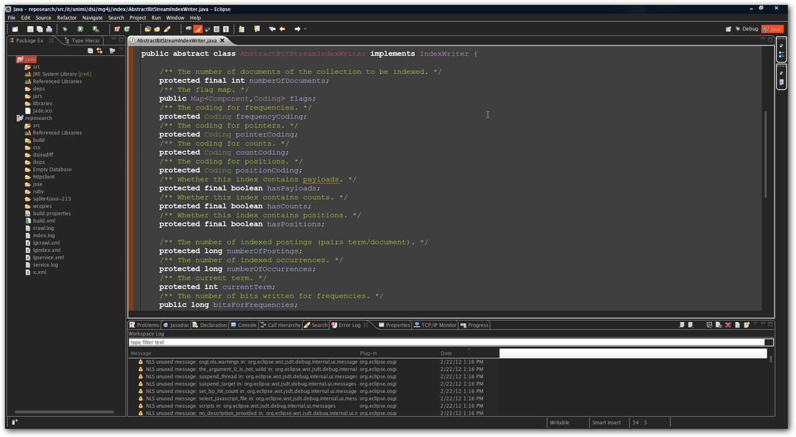

Eclipse IDE for Java - Full Dark Theme
Is there any way to completely turn Eclipse to a dark IDE? Here's a Picture of what I'm asking:
I don't mind doing 1 hour of work to do something like this :D
EDIT:
As Konstantin Komissarchik said, I had to modify my OS colors. This is possible by adding a custom Visual Style to the Windows. With the aid of a Custom Theme and a Custom Visual Style for Windows 7 (Which I have changed a little bit), my Eclipse looks like the picture below: 
Update 2019:
The latest versions of Eclipse now come with a dark theme. Just go to Window
-> Preferences -> General -> Appearance -> Theme and select "Dark" or another
appropriate version based on your operating system.

Of course you can still enable dark visual styles to your Windows or change your theme on other operating systems but the default dark theme is good enough for the most part.
Answer
Moonrise is the best dark theme I have ever seen for Eclipse!
Just follow the steps on the website and Enjoy!
https://github.com/guari/eclipse-ui-theme
Suggest
Update August 2016:
Tejas Padliya adds in the comments:
Dark theme works well with Eclipse 4.5 onward with Windows 10.
No more black text on black background
Update June 2014:
As mentioned din "Dark Theme, Top Eclipse Luna Feature #5", Eclipse 4.4 (Luna) has a dark theme included in it (see informatik01's comment):
When Eclipse 3.0 shipped in 2004 it brought a new look to the workbench. Now, 10 years later, an entirely new Dark Theme is launching.
The theme extends to more than just the Widgets. Syntax highlighting has also been improved to take advantage of the new look.
The What's new page mentions:
A new dark window theme has been introduced. This popular community theme demonstrates the power of the underlying Eclipse 4 styling engine.
You can enable it from theGeneral > Appearancepreference page.
Plug-ins can contribute extensions to this theme to style their own specific views and editors to match the window theme.
Update April 2013:
It seems the solution below don't work well with Eclipse Juno 4.2 and Windows 8, according to Lennart in the comments.
One solution which (mostly) work is the Eclipse Chrome Theme (compatible Juno 4.2 and even Kepler 4.3), from the GitHub project eclipse-themes , by Jeeeyul Lee.
This post mentions:
The first is to change the appearance of what is inside the editor windows.
That can be done with the Eclipse Colour Theme plugin (http://eclipsecolorthemes.org/). My favourite editor theme is Vibrant Ink with the Monaco font. They explain how to install their themes very well (http://eclipsecolorthemes.org/?view=how-to-use), although you get a fine set of dark themes with the default plugin install and may not need to come back to their website for any more. Get the plugin here.The second stage is darkening the chrome of the UI, which is all the widgets and menus and everything outside of the child window canvases.
This plugin gives you a GUI editor for the chrome colour scheme: https://github.com/jeeeyul/eclipse-themes/.
If you want a dark one, go ahead and click away until eclipse is dark.Once you are done, some GUI surface area will show through the system theme as mentioned at the top of this post.
Rather than using that editor, you could install the pre-baked Dark Juno theme instead.
The install is manual.
Start by downloading it from here: https://github.com/eclipse-color- theme/eclipse-ui-themes.
It has to be copied into your eclipse dropins folder. This lives next to the eclipse executable, not in your workspace or someplace like that. In my case the command to do the copy was:
cp ./plugins/com.github.eclipsecolortheme.themes_1.0.0.201207121019.jar /usr/lib/eclipse/dropins/
You could be running eclipse from any directory though, so which eclipse will tell you where it should go.
Restart eclipse and you should find a Dark Juno option underPreferences::General::Appearance. It is a nice neutral grey with some gradients and is a very good option.
~~~~~~
Update December 2012 (20 months later):
The blog post "Jin Mingjian: Eclipse Darker Theme" mentions this GitHub repo " eclipse themes - darker ":
The big fun is that, the codes are minimized by using Eclipse4 platform technologies like dependency injection.
It proves that again, the concise codes and advanced features could be achieved by contributing or extending with the external form(like library, framework).
New language is not necessary just for this kind of purpose.
Update July 2012 (15 months later):
I have seen one! (Ie, a fully dark theme for Eclipse), as reported by Lars Vogel in "Eclipse 4 is beautiful – Create your own Eclipse 4 theme":
If you want to play with it, you only need to write a plug-in, create a CSS file and use the
org.eclipse.e4.ui.css.swt.themeextension point to point to your file.
If you export your plug-in, place it in the “dropins” folder of your Eclipse installation and your styling is available.
pixeldude mentions in the comments having publish "Dark Juno" on GitHub!
Komododave mentions that you don't always need a plugin: see "Ubuntu + Eclipse 4.2 - Dark theme - How to darken sidebar backgrounds?" for an example, based on gtkrc resource.
Original answer: March 2011
Note that a full dark theme will be possible with e4.
(see dynamic css with e4 or A week at e4 – Themeing in e4):
In the meantime, only for editors though (which isn't what you want but still merit to be mentioned):
www.eclipsecolorthemes.org :
"Fresh up your Eclipse with super-awesome color themes!"